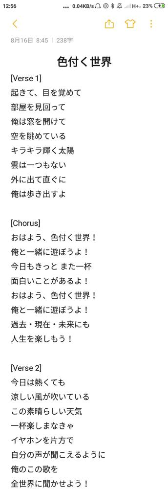

Медленно уходит лето...
Точнее, уже ушло.
Должен сказать, такого насыщенного событиями лета у меня давно не было.
Но обо всем по порядку.
В первых числах июня подсел на игру сёги (типа японских шахмат). До сих пор играю и часто обыгрываю бота.
Весь июнь у меня был ОГЭ (редкостная фигня: чуть ли не с закрытыми глазами все на пять написал), поэтому мы чуть ли не каждый день мотались на дачу и обратно. Это вносило некое разнообразие в мою жизнь.
24 числа спонтанно сгонял в гости к моему другу Владосу, у которого мы насмотрелись видосов, наигрались в приставку и лично я обожрался пиццей и напился двумя литрами дюшеса.
Далее 9 июля. Все лето это откладывал и наконец взял себя в руки и сказал себе: Действуй!
Записал на свой телеф превьюшку первого сингла дуэта ZingerS (членом которого я являюсь). Музыка: H1K0; текст песни: KicKReprod.
21 июля в 18:28 мы всей семьей поехали на отдых в станицу Должанская. Учитывая погоду в то время, греться. Я измерил дорогу: проехали 1287 км за 14 часов.
Этот отдых в Должанке просто незабываем! Каждое утро и каждый вечер ходили на пляж, два раза катались на кончик Долгой косы (виды там шикарные), побывали в Ейском аквапарке, а лично я на своих ногах и на арендованном у хозяев велике обошел и объездил всю станицу. Я не буду все это здесь описывать подробно, вот вам лучше альбом с фотками.
Кстати, в Ейском аквапарке произошел переломный момент. Не в том смысле, что я схлопотал перелом. В какой-то момент заиграла новая песня Димы Билана Про белые розы
. Кто не знает, песня ностальгическая и оформлена в стиле диско. Я слышал эту песню еще где-то в середине июля по радио, но тогда не обратил особого внимания, однако после аквапарка конкретно на нее подсел.
15 августа, предпоследний день нашего пребывания в Должанке. Днем мне, как обычно, нечего было делать, и мне в голову пришла идея: а не попробовать ли мне тоже сделать трек в стиле диско? Раньше я такого не делал, а значит, это будет полезный опыт. В интернете я нашел классный плагин-синтезатор под диско и принялся за работу.
Для начала я взял мелодию из Looking At The Sky и Looking At The Sky V2 (оба были сделаны осенью 2016) и переложил ее. Результат меня так обрадовал, что за день я практически доделал трек.
— Планирую сделать песню, — написал я своему другу Майку Аллену — партнеру по ZingerS, — но слова хочу попробовать написать сам.
Я шесть с половиной лет (с тех пор, как научился на гитаре играть) мечтал сделать свою песню, то есть и музыку написать, и слова, и спеть ее. Кто бы мог подумать, что она исполнится так легко и быстро?
Мы выехали в Москву в одиннадцать вечера. Было темно, клонило в сон. До Ростова подремал немножко, проснулся и от нечего делать стал писать слова. На японском. Потому что в русском и английском меня ужасно бесят рифмы, а в японском этого нет, и знания языка мне хватает.
Первый куплет был почти готов уже в четыре часа ночи. А к часу дня текст был готов полностью. Вот скрин, сделанный в то время:
Относительно нынешней версии эта отличается лишь последними двумя строчками первого куплета и первыми двумя второго, переставленными местами, а также одной строкой в припеве.
Ах да, песня получила название 『色付く世界』, читается IROZUKU SEKAI, переводится Разноцветный мир
. Весь перевод прилагать не буду, он есть на моем сайте; скажу лишь, что песня обо мне, когда я просыпаюсь утром и радуюсь жизни.
Также 16-го августа по дороге мы заехали в Воронеж. Во-первых, лопнуло колесо, а во-вторых, я уже несколько лет мечтал посетить памятник Белому Биму. Знаете, это такой красивый город! Я столько фоток там наделал (альбом).
На следующий день, 17 августа, я вооружился своим телефоном и записал превьюшку ИРОСЭКИ (сокращение от ИРОдзуку СЭКАй).
Посидев пару деньков в Москве, 19-го числа мы поехали на дачу. 21-го к нам в гости до конца недели приехал тот самый Майк Аллен.
Самая насыщенная неделя за все лето.
21-го числа я показал другу территорию нашего СНТ и немножко за ним. В том числе и смотровую площадку
на обрывистом берегу Оки. (Кстати, я заметил, что и у нас в Орешково, и в селе Константиново, и около Городища Старая Рязань — везде правый берег Оки обрывистый.) Вооружившись фотоаппаратом моих родителей (который в ближайшем времени перейдет ко мне), мы наделали много классных фоток (фотки с этой даты).
22-го ничего особо насыщенного не было, разве что начали работу над новым треком ZingerS, текст которого Майк начал писать, кстати, того же 16-го числа. Уже 24-го вечером трек был готов.
23-го мы устроили велозабив в село Константиново. Это было круто! Обошли все холмы и наделали кучу фоток (фотоаппарат родителей нам взять не разрешили, пришлось юзать мою мыльницу, на которой каждый пятый пиксель — шумы). Ловите альбом.
24-го моя семья и Майк поехали в деревню к бабушке копать картошку. Вечером посидели у костра и, как я уже говорил, доделали новый трек дуэта ZingerS.
А 25-го, вернувшись от бабушки, мы по моей инициативе поехали в Белоомут. Была б моя воля, мы (по крайней мере, я) обошли бы весь город, а так просто побывали на озере, и чуть покатались по городу.
26-го вернулись в Москву, а 27-го состоялась прогулка по 19 московским набережным вместе с тем же Майком (список набережных: Нагатинская, Новоданиловская, Даниловская, Павелецкая, Дербеневская, Шлюзовая, Космодамианская, (Павелецкий мост, но он не набережная), Гончарная, Котельническая, Москворецкая, Кремлевская, Пречистенская, Фрунзенская, Лужнецкая, Новодевичья, Саввинская, Ростовская, Смоленская, Краснопресненская). Но из-за того, что я давно не ходил на дистанции больше 15 км за раз, а там вышло почти 30 км, у меня до сих пор жуткие мозоли.
Ну а сегодня — 1 сентября — ездили на МАКС. Пофиг, что по календарю сегодня осень, для меня она начнется завтра.
Осень — далеко не мое любимое время года, но ввиду нескольких факторов у меня много позитивных расчетов на эту осень. Зная меня, даже если они не все оправдаются, будет весело!
{kind=link}